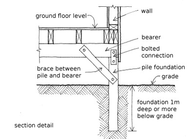

Deep foundation, with lateral capacity [FOSDL]
The foundations are 1m deep or more below grade, and they have lateral capacity. Foundations with lateral capacity include tie-beams, foundation walls, inclined piles, piles or piers on wide spread footings.

An example of a braced timber pile deep foundation with lateral capacity. This example is a deep foundation that is braced. Another option is for the deep pile not to be braced but to just act as a vertical cantilever provided the height of the pile is not too great above ground level.